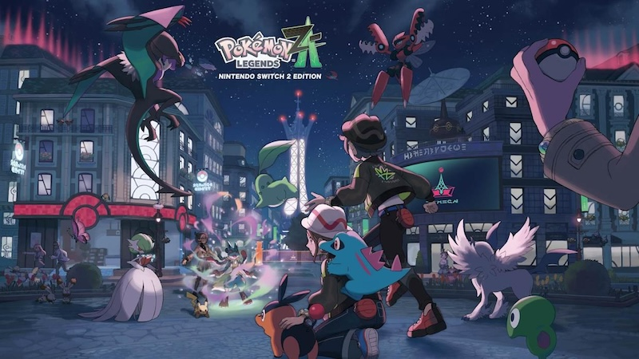
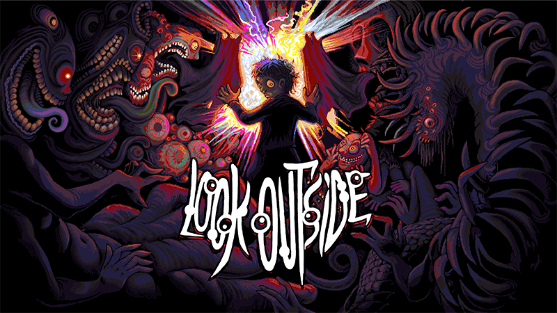
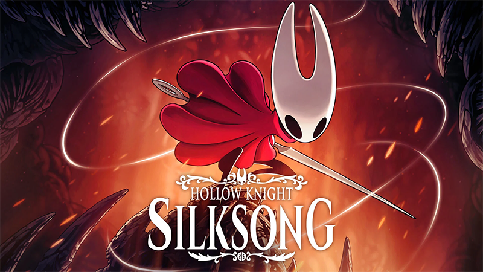

2025 Game Recap
2025 was a fun year of games blah blah
 I remember Pokemon X being my Christmas gift (along with a 2DS) when I was 9 years old in 2013. At this time I had played Pokemon games before, but I remember how big of a deal X&Y were when they were announced through YouTube videos: the first 3D Pokemon game, when the starters were revealed, you could now sit on benches, etc. The Kalos region is special to me, and I was very excited to see the next Legends game take place in Kalos. I enjoyed Legends Arceus a lot and while I think I prefer that over Legends ZA, I loved returning to Kalos with a new battle system and exploring everything in Lumoise City. I also found so many shiny Pokemon in my first week of playing. I found like one every day. That was very memorable.  One of the contradictions I have is that I love the idea of horror games (especially if they have pixel art), but I do not like playing them because I would get way too scared. Horror in general makes me feel squeamish, especially body horror. But I remember seeing reviews and videos for Look Outside and I was really drawn to it, so I tried to get over my fears to at least play the first hour or so myself. That hour ended up turning into nearly 20 hours (and I’m still planning on completing a whole new playthrough). Look Outside and its premise is horrifying, but somehow there are more moments where something made me laugh or I was charmed and inspired than I felt scared. I also really appreciate the amount of depth and creativity this game has (it received a major update recently that I need to try out). The music, art, characters, and writing are amazing, and I can definitely tell how much love is poured into this game.  It was very hard for me to pick between Look Outside and Silksong for my game of the year. However, Silksong kind of took over my life when it came out. I first played Hollow Knight in summer 2024, so I thankfully only had to suffer one year for Silksong news compared to the 8 years everyone else who played Hollow Knight when it came out had to suffer. But the excitement for Silksong was the release date was finally announced was contagious. Even within my first hour of playing it I thought that this game was well worth the wait. The game was brutally frustrating at times, but it’s an incredibly rewarding experience. It improves on everything from Hollow Knight (I personally had very few issues with Hollow Knight, so almost perfecting perfection). I’ll definitely never forget playing this game. #3: Pokemon Legends ZA
#2: Look Outside
#1: Hollow Knight: Silksong